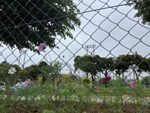
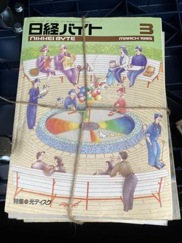
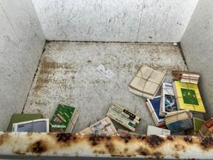
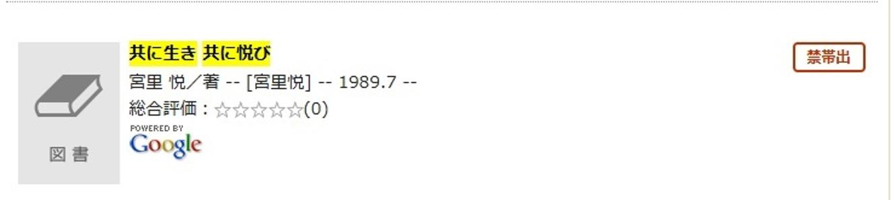
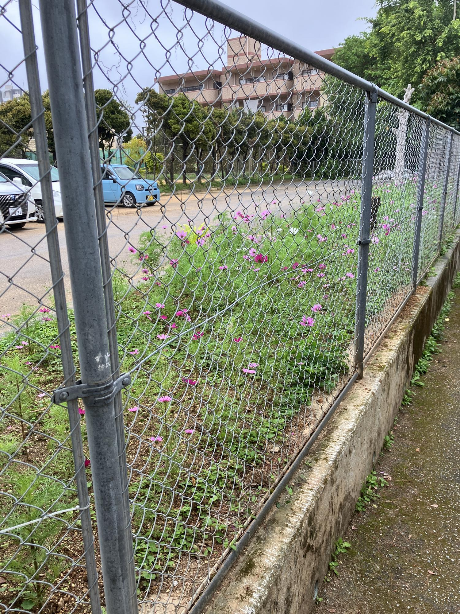

うるがいの話 ある日
最新: 古本【うるがいの話 ある日】とは 一日だけのプログです
『うるがいの話』の最新一日だけのプログで、通信料が少なく経済的だ。カニの画像をクリックすると全ての日付が載る『うるがいの話』サイトを表示します
|
|
【うるがいの話】 うるがい(ｳﾙｶﾞｲ urugai)とは、『もずくがに』の名前でとても大きくなります。 |
|---|---|
|
|
【カミマヤーの話】 猫のことを方言でマヤーといいます。カミマヤー（kamimayaa）とは、神の猫のことです。 |
|
【たながぁの音楽】 たながぁ（ﾀﾅｶﾞｰ tanagaa）とは手長えびのことで、何種類かあり大きいのは車 エビぐらいになります。 |

|
【ぶながぁの話】 ぶながぁ(ﾌﾞﾅｶﾞｰ bunagaa)とは、赤い髪の毛、赤い身体、そして身長は１ｍ２０ｃｍ ぐらい、川の蟹を食べているの目撃された。場所は沖縄県国頭郡大宜味村のと ある村僕の隣近所に住んでいる爺さんから、聞いた話です。 |
|
|
【ギーマの話】 ギーマ(giima)とは、山原の里山に咲くスズランに似た、 花を付けます。実は食べられます、 気が付くと口の周りが紫になっています。 |
2025年03月30日 (日）古本
16:17

小雨が降る中、古紙回収ボックス『えこすぽっと』に、３９キロの
古雑誌を廃棄した。私が入れる前のボックスは、空だった。
 
でも、全てをすてたのではなく、残した本もある。その中の一つに
私の４名兄弟が、一年生の時の担任だった先生が、書いた本があっ
た。ヨメのお母さんの本だったのだろうか、懐かしいので読んだ。
実名が、書いてある。分かる人には分かるのである。せっかくなの
で、
『共に生き 共に悦び』 著者 宮里 悦 平成元年 より
三番目の思い出である。・・・同僚の金城初子先生が、笑みを満面
に浮かべ、教室近くの廊下で、私を呼びとめた。「悦先生、秀樹（
初子先生の長男）のお年玉貯金、とても、たくさんになっています
よ。たとえ、入学金が沢山出ることになっても、全然心配ない。先
生のおかげさまです。」と、お礼を云われた。
私が、小学６年生の卒業式では、事前の話では小学６年間の皆勤賞
が、式のプログラムにあったらしい。が、直前になって金城初子先
生が、私の休みを探して賞はボツになったらしい。と母親が、悔し
そうに話すことがあった。なお、この本は那覇市立図書館には無く
県では、貸し出し禁止になっている。かずかずの個人情報が、沢山
のっているせいか、まさかね。

校庭のコスモスが、綺麗に咲いていた。
